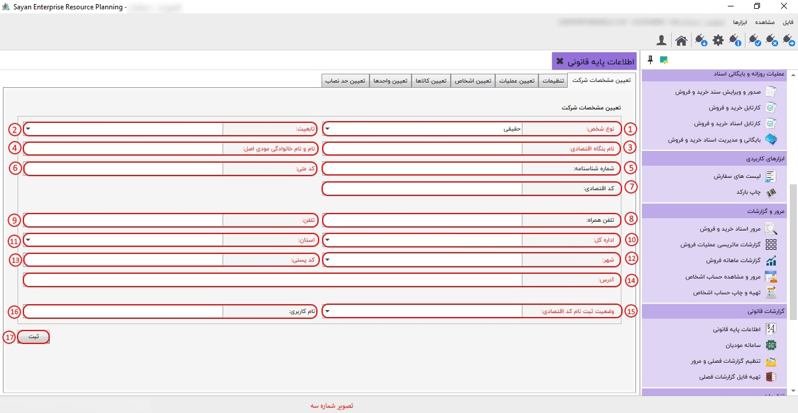
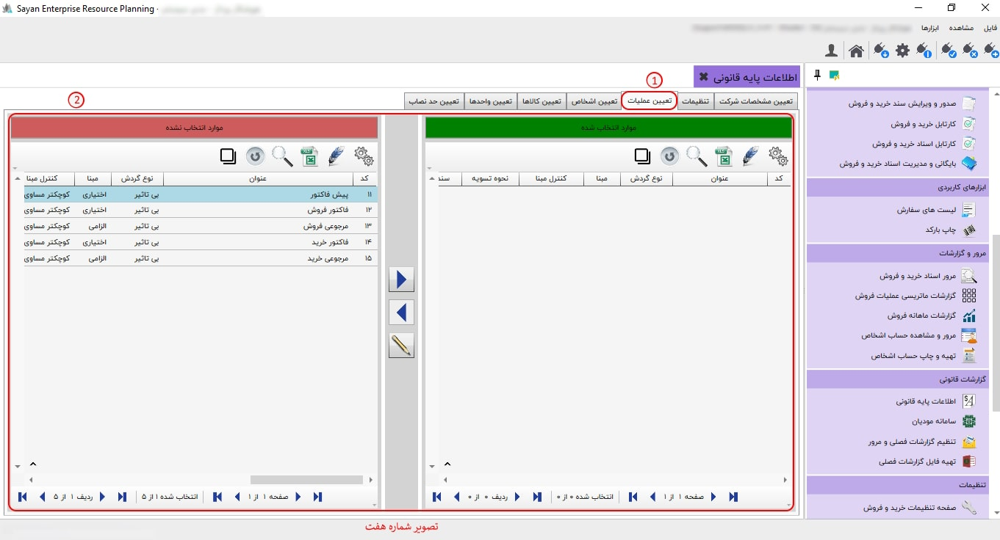
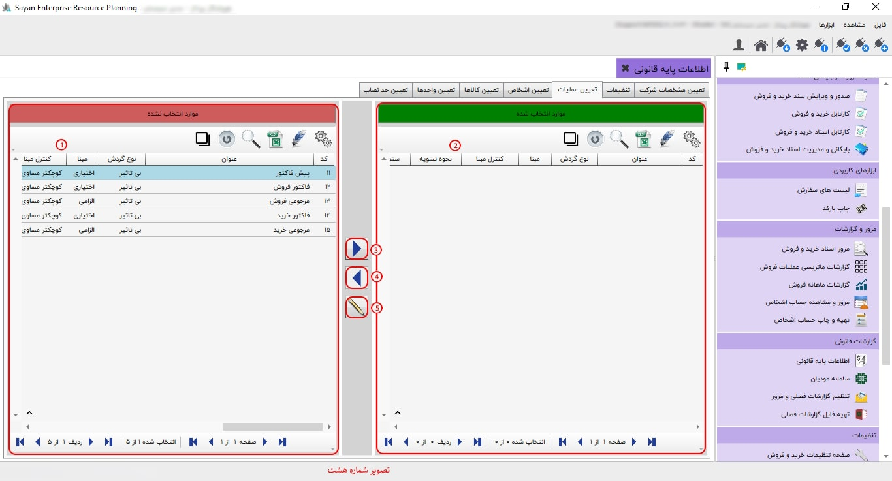
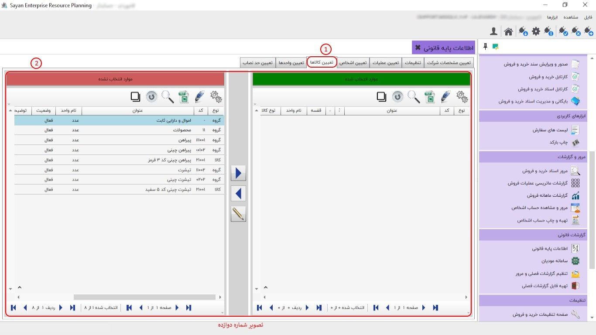

گزارشات قانونی سایان شامل قسمت سامانه مودیان و قسمت گزارشات فصلی میباشد، این گزارشات قانونی نیاز به تنظیمات دارد در قسمت اطلاعات پایه قانونی به آن پرداخت می شود.
برای ادامه مطلب به تصویر شماره دو مراجعه نمایید.
-تعیین مشخصات شرکت (کادر شماره یک): در این بخش، میتوانید اطلاعات مربوط به مجموعهی خود را وارد نمایید.
-کادر شماره دو :"با انتخاب گزینه ویرایش، می توانید اقدام به پر کردن و اصلاح اطلاعات خواسته شده نمایید. در این قسمت، اطلاعاتی که نام آن ها به رنگ قرمز مشخص شده است، الزامی هستند و اطلاعاتی که به رنگ مشکی مشخص شده اند، غیر الزامی می باشند.
برای ادامه مطلب به تصویر شماره سه مراجعه نمایید.
-نوع شخص (کادر شماره یک): در این فیلد، با توجه به پرونده مالیاتی، نوع شخص کسبوکارخود را از بین حقیقی و حقوقی مشخص نمایید.
"نکته: نوع شخص در تصویر فوق (تصویر شماره سه)، حقیقی انتخاب شده و در تصویر شماره چهار، حقوقی انتخاب شده است."
-تابعیت (کادر شماره دو): ایرانی یا غیرایرانی بودن مودی مشخص گردد.
-نام بنگاه اقتصادی، شرکت (کادر شماره سه): نام مجموعه مورد نظر را به همان صورت که در کارپوشه قید شده است وارد نمایید.
«نکته: فیلدهای قرمز الزامی هستند، اما فیلدهای مشکی غیرالزامی میباشند.»
- نام و نام خانوادگی مودی اصلی (کادر شماره چهار): در این فیلد، نام و نام خانوادگی شخص حقیقی که پرونده مالیاتی انفرادی به نام او است و یا نماینده پرونده مالیاتی مشارکت مدنی میباشد را به طور کامل وارد نمایید.
-شماره شناسنامه (کادر شماره پنج): در این قسمت شماره شناسنامه مودی خود را وارد نمایید.
-کد ملی (کادر شماره شش): کد ملی 10 رقمی مودی اصلی خود را وارد نمایید.
-کد اقتصادی (کادر شماره هفت): در این قسمت، چنانچه نوع شخص "حقیقی مشارکت" باشد، کد اقتصادی ۱۱ رقمی را وارد نمایید. اما اگر نوع شخص "حقیقی انفرادی" باشد، وارد کردن کد اقتصادی ۱۴ رقمی الزامی است.
-تلفن همراه (کادر شماره هشت): در این قسمت تلفن همراه مودی را وارد کنید.
-تلفن (کادر شماره نه): در این کادر یک شماره ثابت معتبر از محل کسب و کار و یا شماره همراه ثبت شده در پرونده مالیاتی مودی را وارد نمایید.
-اداره کل (کادر شماره ده): در این قسمت، اداره کل حوزه مالیاتی خود را وارد نمایید.
-استان (کادر شماره یازده): پس از انتخاب اداره کل، استان نمایش داده شده را انتخاب نمایید.
-شهر (کادر شماره دوازده): با توجه به استانی که در کادر یازده وارد کردهاید، شهر محل کسب و کار خود را از بین شهرهای آن استان انتخاب کنید.
نکته: در صورتی که شهر مورد نظر شما در لیست مذکور وجود نداشته باشد، نام شهر را در اطلاعات پایه و مشترک اضافه نمایید.
-کد پستی (کادر شماره سیزده): کد پستی ۱۰ رقمی معتبر مختص به محل شرکت را وارد نمایید.
-آدرس (کادر شماره چهارده): در این بخش، آدرس شرکت را بین ۱۵ الی ۷۰ کاراکتر وارد نمایید.
-وضعیت ثبت نام اقتصادی (کادر شماره پانزده): از میان گزینههای موجود، آخرین وضعیت ثبت نام پرونده مالیاتی خود را انتخاب و مشخص نمایید.
نکته: اگر در مرحلهی چهارم ثبتنام هستید، گزینهی "نام کاربری دارم" را انتخاب کنید. اگر هنوز ثبتنام شما به پایان نرسیده است، گزینهی "کد رهگیری دارم" را برگزینید. و اگر تاکنون اقدامی برای ثبتنام نکردهاید، گزینهی "پیشثبتنام کد اقتصادی نکردهام" را انتخاب نمایید.
-نام کاربری (کادر شماره شانزده): در این فیلد، با توجه به وضعیت ثبتنام اقتصادی، نام کاربری یا کد رهگیری که هنگام ورود به کارپوشه وارد میشوید را تنظیم نمایید.
-ثبت (کادر شماره هفده): پس از تکمیل یا ویرایش فیلدهای فوق، جهت ذخیره اطلاعات، دکمه ثبت را کلیک کنید.
برای ادامه مطلب به تصویر شماره چهار مراجعه نمایید.

"پیش از این درباره یک سری فیلدها توضیحات لازم ارائه شده است و همانطور که اشاره شده بود، در تصویر شماره چهار نوع شخص حقوقی انتخاب شده است."
-نوع شخص (کادر شماره یک): اگر بهعنوان یک شخصیت حقوقی فعالیت مالیاتی انجام میدهید، با انتخاب نوع حقوقی، فیلدهای مشخصشده در تصویر شماره چهار تغییر خواهند کرد که در ادامه به آنها پرداختهایم و بقیه فیلدها مطابق توضیحات قبلی پر خواهند شد.
"نکته: در صورت انتخاب نوع شخص حقوقی، نیازی به وارد کردن کد اقتصادی نخواهد بود، زیرا از شناسه ملی وارد شده استفاده خواهد شد."
-نوع شرکت (کادر شماره دو): ایرانی یا غیرایرانی بودن شرکت مشخص گردد.
-نام شرکت (کادر شماره سه): فیلد نام شرکت را با نام کامل شرکت خود تکمیل کنید.
-نام و نام خانوادگی مدیرعامل (کادر شماره چهار): نام کامل مدیرعامل شرکت را وارد نمایید.
-شماره ثبت (کادر شماره پنج): فیلد 'شناسه ثبت' را با شناسه ثبت معتبر خود تکمیل نمایید.
-شناسه ملی (کادر شماره شش): در این فیلد، شناسه ملی 11 رقمی شرکت خود را وارد نمایید.
برای ادامه مطلب به تصویر شماره پنج مراجعه نمایید.

-تنظیمات (کادر شماره یک): در سربرگ تنظیمات، باتوجه به اطلاعاتی که در 'تعیین مشخصات شرکت' وارد کردهاید، به شرح زیر شناسه یکتا دریافت نمایید.
-کادر شماره دو: در این بخش، شما میتوانید کلید عمومی خود را دریافت کرده و سپس شناسه یکتای خود را از طریق کارپوشه خود بهدست آورید.
برای ادامه مطلب به تصویر شماره شش مراجعه نمایید.

-تنظیم شماره صورتحساب سند حسابداری (کادر شماره یک): این بخش به تنظیمات گزارشات فصلی اختصاص دارد و برای استفاده از سامانه مودیان، نیازی به تغییر گزینهها وجود ندارد.
-دریافت کلیدهای عمومی و اختصاصی (کادر شماره دو): هنگامی که گزینه 'دریافت کلید' را انتخاب میکنید، سیستم مشخصات شرکت شما را با دو فرمت ۱) کلید عمومی و ۲) کلید اختصاصی برای شما ایجاد میکند. در صورتی که شرکت فاقد امضای الکترونیکی باشد، از کلید عمومی استفاده کنید. اما اگر شرکت دارای امضای الکترونیکی باشد، از کلید اختصاصی بهرهبرداری شود. برای ساخت فایل متنی، ابتدا روی گزینه 'دریافت فایل' کلید مورد نظر کلیک کنید و سپس مسیر و نام دلخواه را وارد کرده و گزینه 'Save' را بزنید. برای مثال، میتوانید مسیر C:\Users\PC\Desktop و نام 'Public Key' را برای ذخیره کردن کلید عمومی در صفحه دسکتاپ استفاده کنید.
"نکته: لازم است تنها یکی از این دو فایل از نرمافزار استخراج شود و در روند دریافت شناسه یکتا استفاده گردد. هر شناسه یکتا دیگری از هر روش و برنامهای در این نرمافزار کاربردی ندارد."
-ذخیره شناسه یکتا در حافظه مالیاتی (کادر شماره سه): پس از هر بار دریافت فایل کلید، نیاز است در کارپوشه مالیاتی بهعنوان مودی، یک شناسه یکتا جدید دریافت کنید. سپس این کد را با زدن دکمه ویرایش در فیلد مشخص شده جایگذاری و ثبت نمایید.
"نکته: این شناسه از زمانی که توسط شما ساخته میشود تا هر زمانی که در کارپوشه غیرفعال یا حذف نشود، قابل استفاده است."
-تعیین آدرس سرور برای ارسال صورتحساب (کادر شماره چهار): در این کادر بهطور پیشفرض کارپوشه اصلی مودیان مقصد قرار دارد و شما میتوانید پس از ارسال درخواست، آدرس ارسال صورتحسابهای خود را به سامانه آزمایشی (sandbox) تغییر دهید.
-تعیین روش ارسال صورتحساب: مبنای شمارهگذاری صورتحساب بهصورت پیشفرض هگزادسیمال (مبنای ۱۶) میباشد. این روش بر اساس استاندارد سامانه مودیان تنظیم شده است. در این حالت، شماره صورتحساب در کارپوشه بهصورت یک عدد هگزادسیمال ارسال میشود. برای مثال، شما صورتحساب شماره ۱۰ را در کارپوشه بهصورت شماره ۰۰۰۰۰۰۰۰۰A مشاهده میکنید. شما این امکان را دارید که پس از ارسال درخواست، از طریق فعالسازی گزینه دسیمال، این تغییر را اعمال کنید تا شماره صورتحساب ۱۰ بهصورت مستقیم در کارپوشه نمایش داده شود.
برای ادامه مطلب به تصویر شماره هفت مراجعه نمایید.
-تعیین عملیات (کادر شماره یک): این سربرگ مختص کاربرانی است که زیرسیستم خرید و فروش را نیز دارند. این افراد تنظیم عملیاتهای مورد نیاز برای سامانه مودیان و گزارشات فصلی را در این بخش مشخص خواهند کرد.
نکته: کاربرانی که تنها از این نرمافزار برای ارسال صورتحساب به سامانه مؤدیان استفاده میکنند، موظفاند تنها عملیات مربوط به فاکتور فروش را بهعنوان موارد انتخابشده قرار دهند.
-کادر شماره دو: در این بخش میتوانید موارد انتخابنشده را به موارد انتخابشده انتقال دهید و بالعکس.
برای ادامه مطلب به تصویر شماره هشت مراجعه نمایید.
-موارد انتخابشده (کادر شماره یک): در این بخش میتوانید موارد انتخابشده را به موارد انتخابنشده انتقال دهید.
-موارد انتخابنشده (کادر شماره دو): این فیلد این امکان را به شما میدهد که موارد انتخابنشده را به موارد انتخابشده منتقل کنید.
کادر شماره سه:برای اضافه کردن موارد انتخاب نشده از این آیکون میتوانید استفاده کنید .

-کادر شماره چهار: در این آیکون میتوانید از آن برای حذف موارد انتخابشده استفاده کنید.
-کادر شماره پنج: برای ویرایش اطلاعات خود، میتوانید از این آیکون استفاده نمایید.
برای ادامه مطلب به تصویر شماره نه مراجعه نمایید.

-نوع عملیات (کادر شماره یک) : "در این بخش، نوع عملیات مربوط به انتقال آیتمها را مشخص میکنید. با انتخاب گزینه 'فروش کالا/خدمات'، فرآیند انتقال به عنوان فروش ثبت میشود. اگر قصد خرید کالا یا خدمات دارید، گزینه 'خرید کالا/خدمات' را انتخاب کنید.
-مبلغ (کادر شماره دو): لطفاً ابتدا بر روی سه نقطه کلیک کنید. با انجام این کار، تصویری برای شما نمایش داده خواهد شد که باید مبلغ را انتخاب کرده و سپس آن را تأیید کنید.
-تخفیف (کادر شماره سوم): لطفاً ابتدا بر روی سه نقطه کلیک کنید. با انجام این کار، تصویری برای شما نمایش داده خواهد شد که باید تخفیف مورد نظر خود را انتخاب کرده و سپس آن را تأیید کنید.
-مبلغ مالیات بر ارزش افزوده (کادر شماره چهارم): در این بخش نیازی به وارد کردن اطلاعات نمیباشد.
-مبلغ سایر مالیات و عوارض (کادر شماره پنجم): در این فیلد نیازی به وارد کردن اطلاعات نمیباشد.
-مبلغ سایر وجوه قانونی (کادر شماره ششم): در این آیتم نیازی به وارد کردن اطلاعات نمیباشد.
-نوع فاکتور (کادر شماره هفت): در این بخش میبایست نوع دقیق عملیات فاکتور خود را بر اساس نیازهای خود انتخاب نمایید.
-مبلغ نسیه (کادر شماره هشت): در این بخش میتوانید فرمول محاسبه میزان نسیه کل فاکتور قبل از اعمال مالیات بر ارزش افزوده را وارد کنید.
برای ادامه مطلب به تصویر شماره ده مراجعه نمایید.
-تعیین اشخاص (کادر شماره یک): در قسمت تعیین اشخاص، میتوانید خریدار/فروشنده را به صورت تکی یا گروهی انتخاب نمایید.
-کادر شماره دو: در این بخش میتوانید موارد انتخابنشده را به موارد انتخابشده انتقال دهید و بالعکس.
برای ادامه مطلب به تصویر شماره یازده مراجعه نمایید.
-نوع خریدار/فروشنده (کادر شماره یک): در این مرحله، نوع شخص خریدار یا فروشنده را با توجه به نوع صورتحسابی که برای آن شخص ارسال کردهاید، وارد نمایید.
برای ادامه مطلب به تصویر شماره دوازده مراجعه نمایید.
-تعیین کالا (کادر شماره یک): در این آیتم میتوانید نوع کالای موردنظر خود را انتخاب نمایید.
-کادر شماره دو: این فیلد این امکان را به شما میدهد که موارد انتخابنشده کالای خود را به موارد انتخابشده انتقال دهید.
برای ادامه مطلب به تصویر شماره سیزده مراجعه نمایید.
-نوع کالا (کادر شماره یک): در این قسمت، یک لیست کشویی نمایش داده میشود که شامل دستهبندیهای مختلف کالاهاست. شما میتوانید بر اساس نوع کالای موردنظر، دستهبندی مناسب را از میان گزینههای موجود انتخاب کنید. در صورتی که کالای شما در هیچیک از دستهبندیها قرار نمیگیرد، میبایست گزینهی "سایر کالاها" را انتخاب کنید.
-شناسه کالا/خدمت (کادر شماره دو): در این بخش، شناسهی یکتای هر کالا یا خدمت که به صورت کد یا شماره مشخص میشود، وارد می گردد.
-نرخ مالیات بر ارزش افزوده (کادر شماره سه): در این بخش، نرخ مالیات مربوط به کالا یا خدمت انتخابی تعیین میشود.
برای ادامه مطلب به تصویر شماره چهارده مراجعه نمایید.
-تعیین واحد (کادر شماره یک): در این بخش، برای انتخاب واحدهای غیرالزامی طراحی شده است و لازم است کاربر با دقت واحدهای مناسب را انتخاب نماید.
-کادر شماره دو: این فیلد این امکان را به شما میدهد که واحدهای انتخابنشده را به واحدهای انتخابشده انتقال دهید.
برای ادامه مطلب به تصویر شماره پانزده مراجعه نمایید.

-نوع واحد (کادر شماره یک): در این قسمت، شما میتوانید از بین گزینههای موجود، واحد معادل مناسب را انتخاب کنید.
برای ادامه مطلب به تصویر شماره شانزده مراجعه نمایید.
-تعیین حد نصاب (کادر شماره یک): حد نصاب معاملات فصلی هر ساله از طرف سازمان امور مالیاتی به مودیان ابلاغ میگردد، تا برای ارسال صورت معاملات خود دچار اشتباه نشوند.
-کادر شماره دوم: در این بخش میتوانید مبلغ حد نصاب خود را تعریف نمایید.